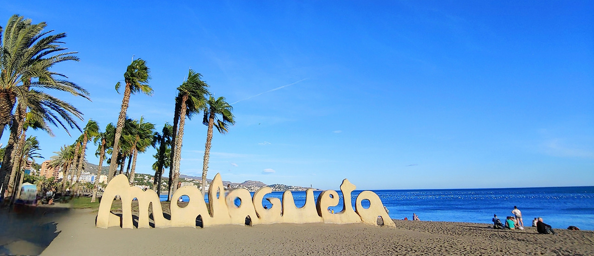
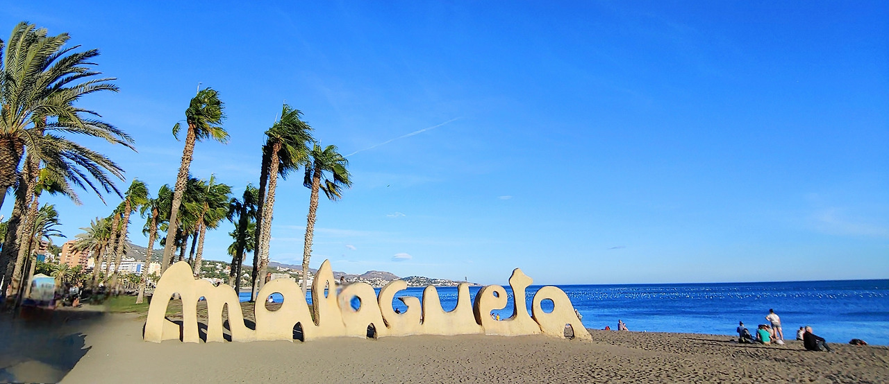

스페인 필수 코스!
스페인을 여행하다 보면 “와… 여기서 살고 싶다!”고 생각이 드는 순간이 정말 많아요.
걷기만 해도 역사와 낭만이 묻어나고, 어느 골목을 돌아도 색다른 풍경이 펼쳐지는 나라.
화려한 도시, 깊은 역사, 그리고 뜨거운 열정까지 함께 느낄 수 있는 곳이죠.
자, 그럼 스페인의 핵심 장소부터 하나씩 천천히 떠나볼까요?
첫 번째로 소개할 곳은… 스페인의 심장, 마드리드 솔 광장(Plaza Mayor)!
스페인의 중심이라 부르는 이유가 있죠. 광장에 서는 순간 묘하게 설레는 분위기.
사방을 둘러싸고 있는 붉은 벽돌 건물들, 고즈넉한 아케이드와 노천카페들까지…
단순한 관광지가 아니라 스페인의 ‘맥박’이 가장 선명하게 느껴지는 공간이에요.
- “여기서 하루 종일 앉아만 있어도 여행 절반은 성공했다”는 말이 있을 정도!
- "광장에서 펼쳐지는 버스킹 공연, 사람들의 활기찬 대화 소리"
- "가끔 울려 퍼지는 종소리"까지 더해져 ‘이게 마드리드다’라는 감성이 완성됩니다.
바람 결에 실려 오는 빵 냄새, 어디선가 구워지는 고기 향까지 느껴지면
문득 “아, 나 지금 스페인에 와 있구나” 싶어지는 순간을 경험할 거예요.
이어서 두 번째로 소개할 곳은… 하늘을 찌르는 웅장함에 숨이 멎는 곳, 세비야 대성당과 히랄다 탑!🏞️
세비야 거리를 걷다가 이 거대한 성당을 마주하는 순간, 마치 시간이 잠시 멈춘 듯한 느낌이 들어요.
높게 뻗은 첨탑과 고딕 특유의 섬세한 장식들은
“이건 정말 사람이 만든 게 맞아?” 싶은 감탄을 자아냅니다.
- “히랄다 탑에 올라가서 보이는 끝없이 펼쳐진 세비야의 붉은 지붕들”
- "도시 전체가 따뜻한 색으로 빛나는 순간"을 만나게 되죠.
바람이 불어오면 오렌지나무 향이 은은하게 스쳐 가고,
바로 아래 광장에서는 사람들의 웃음소리와 말 소리가 잔잔하게 들려
“아… 이게 세비야다” 싶은 감성이 완성돼요.
마지막으로 소개할 곳은… 조용히 마음이 편안해지는 파도 소리, 말라가 라 말라게타 해변!
 

발길이 해변으로 향하는 순간, 먼저 부드러운 바닷바람이 찾아와요.
도시 어디서든 보이는 웅장한 모습 덕분에 피렌체 여행의 랜드마크로 자리 잡고 있죠.
- “현지 주민들이 느긋하게 산책하는 모습”
- “가볍게 뛰는 사람들, 벤치에 앉아 바다를 바라보는 여행자들까지...”
- "시간이 아주 천천히 흐르는 기분"을 느끼게 해주는 곳이죠.
특히 해질 무렵, 태양이 바닷물에 반사되며
주황빛 물결이 잔잔히 흔들리는 풍경은 정말 특별해요.
문득 발걸음을 멈추고 “조금만 더 있고 싶다…” 이런 생각이 자연스럽게 스며드는 곳입니다.
마드리드 솔 광장에서 느낀 웅장함과 설레임,
세비야 대성당과 히랄다 탑에서 보이는 세비야 도시 전체의 아름다움,
말라가 라 말라게타 해변에서 피로를 푸시는 여행.
이 세 곳으로 스페인에서 행복한 여행과 추억을 만들어 가실 수 있을 거예요.